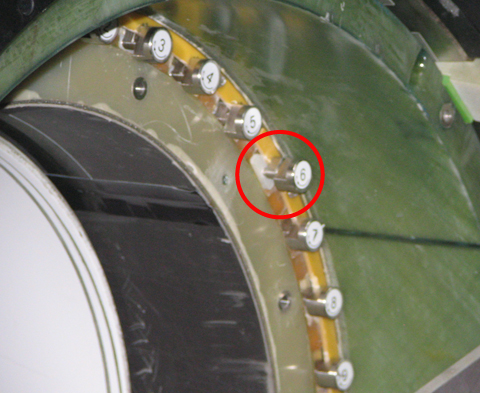

Operating Documentation
Direction 5440001-3, Rev# 6
Module Version 13.0, Version Date 9/16/10
Operating Documentation |
| ||||
| Potential Fatal Injury! | ||||
| before and while shimming the magnet: | ||||
|
| ||||
| Potential Fatal Injury! | ||||
| before shimming the magnet: | ||||
| Have all Work Assistants or Work Observers comply with the Buddy System Requirements & Certification subsection of “MR Magnet - Safety Requirements”. |
| ||||
| Asphyxiation Hazard! | ||||
| The Shimming Procedure generates odorless, colorless helium gas that displaces oxygen in the air. | ||||
| Make sure magnet room vent exhaust fan is on before shimming the magnet. |
| ||||
| Electrical Shock Hazard! | ||||
| Contact with connectors leading to an energized power supply can cause electrical shock. | ||||
| Follow OSHA Lock out/Tag out (LOTO) while making electrical connections to a main power supply or a shim power supply. |
| ||||
| Verify that the Magnet Monitor is on and operational. If using
proprietary Magnet Monitor software, verify that the Magnet Monitor
Pressure Control is enabled and operational. Do NOT move articles or equipment in the Magnet Room while adjusting shim currents because doing so may affect field readings. Only use nonmagnetic tools when working in the Magnet Room. | ||||
| Condition | Reference | Effectivity |
|---|---|---|
Make sure the area is secure and ALL required Warning Signs are posted to meet the safety requirements stated in the following document before starting the Shimming procedure. | - | |
Removal of some magnet enclosure components may be required to complete the Shimming procedure. Refer to the following document and the appropriate Service Methods documentation (available through the Common Documentation Library at gehealthcare.com or your local GE Healthcare Service Representative) before continuing if cover removal is required. | - | |
Verify that the magnet helium level is ≥80%. Fill the magnet in conformance with the following document to make sure the helium level is ≥80% before shimming. | - | |
Verify that the magnet's magnetic field drift rate is <0.1 ppm/hr. in conformance with Field Stability Checksubsection below before starting the Shimming procedure. | - | - |
Verify that Magnet Monitor is on and operational. If using proprietary Magnet Monitor software, verify that Magnet Monitor Pressure Control is enabled and operational. Verify that magnet pressure is steady at 3.9 to 4.1 psig in conformance with Magnet Pressure, Helium Level, and Coldhead S/C Shield subsection below before starting the Shimming procedure. | - | - |
Make sure to reestablish the S/C Shim Currents stated in the magnet's Acceptance Test Report (ATR) in conformance with Re-establishing ATR S/C Shim Currents before starting the Shimming procedure. | - | - |
Make sure the exhaust fan in the Magnet Room is on and operational and the Magnet Room door is propped open before starting the Shimming procedure. | - | - |
Preparations for Shimming must be completed before shimming the magnet.
Prepare for Field Mapping in conformance with Preparations for Field Measurement before Shimming if not already done.
Allow the magnet to stabilize to <0.1 ppm/hr. main field drift before Shimming (takes 12 hours). Perform other commissioning functions during this time.
Verify that the magnet helium level is ≥80%. Fill the magnet in conformance with Liquid Helium Fill to make sure the helium level is ≥80% before continuing.
Verify that the Shim Lead Pigtail Cable 2135362 is connected to P1-A on the Shim Lead Assembly in conformance with the S/C Shim Coil Power Supply Connections to Magnet subsection of Connections for Ramping and Shimming.
Make sure the Shim Lead Assembly is engaged in conformance with Shim Lead Engagement and Disengagement.
Open the Nupro Shim Lead Vent Valve to increase the ability of the Shim Leads to carry current.
| ||||
| Do NOT connect input power to the S/C Shim Coil Power Supply
until it is verified that ALL current controls are set to zero (turned
fully counterclockwise) and the supply is turned off. Connecting the S/C Shim Coil Harness to the magnet when the S/C Shim Coil Power Supply is turned on can cause irreparable damage to the vapor-cooled shim leads. Equipment damage is possible if heater currents are not set correctly. | ||||
Remove LOTO and connect input power to the S/C Shim Coil Power Supply. Make sure the Heater Currents are: T1 = 610 mA (±5 mA), T2 = 610 mA (±5 mA), and Axial = 710 mA (±10 mA). See Section 4 of the vendor's Service Manual for details.
Refer to the illustration below. After sufficient cooling of the Shim Lead Assembly, verify that all six shim power supply channels operate at both positive and negative 250 mA polarities for the Axial, Transverse 1, and Transverse 2 shim groups.
| ||||
| Electrical Shock Hazard! | ||||
| Contact with connectors leading to an energized power supply can cause electrical shock. | ||||
| Follow loto procedures while making electrical connections to the shim power supply. |
Disconnect and LOTO input power to the Shim Coil Power Supply. Verify that no voltage is present by using a DVM or equivalent measuring device.
Refer to the illustration below. Check that Connectors P2 and P2W on S/C Shim Coil Cable 46-260726G1 (Run 603) are connected to the J2 and J2-W (Shim Outputs) on the back of the Power Supply Cabinet (MS7-A1).
Check that Connectors J2 and J2-W on the other end of S/C Shim Coil Cable 46-260726G1 are connected to the Shim Lead Pigtail Cable 2135362.
Connect P703 on Switch Heater Cable 46-260724G1 (Run 604) to Connector J3 (Heater Outputs) on the back of the S/C Shim Coil Power Supply Cabinet (MS7-A1) as shown below.
| ||||
| Connect only one Heater Wire Harness to the Shim Lead Assembly. | ||||
Check that Connector P5 on the Switch Heater Cable (Run 604) is connected to Connector J5-1 or J5-2 on the Shim Lead Assembly.
The Field Stability Check requires 12 hours between the first and second measurements.
Verify that magnet pressure is 4.0 psig, ±0.1 psig:
| ||||
| Do NOT turn on the S/C Shim Coil Power Supply until it is verified that ALL current controls are set to zero (turned fully counterclockwise). | ||||
| NOTE: | Make sure the Teslameter is on at least one hour before taking either measurement to ensure it is stable. |
Remove LOTO and connect the input power to the S/C Shim Coil Power Supply, and turn on (I) all Shim Coil Switch Heaters for five minutes to dump any residual shim currents.
Turn off (O) the Switch Heaters, and allow three to five minutes for the switch heaters to go persistent before continuing with Shimming.
Disconnect the Heater Cable (P703) from the Shim Coil Power Supply.
Turn off the Shim Coil Power Supply.
| ||||
| Electrical Shock Hazard! | ||||
| Contact with connectors leading to an energized power supply can cause electrical shock. | ||||
| Follow loTO procedures while making electrical connections to the shim power supply. |
Disconnect and LOTO the input power to the Shim Coil Power Supply. Check that no voltage is present by using a DVM or equivalent measuring device.
Measure and record the magnetic field (center frequency) as Frequency 1. Take this measurement as soon after Ramping as possible.
| ||||
| Do NOT move the Probe between the first and second measurements. Do NOT move or rearrange any articles or equipment in or near the Exam Room during the test. | ||||
Check that the magnet has stabilized (0.1 ppm/hr. maximum drift) by using this formula:
On the Magnet Monitor:
| ||||
| Shimming is affected by magnet pressure. Make sure the Magnet Monitor Pressure Controller is functioning properly and magnet pressure is steady at 3.9 to 4.1 psig before starting shimming procedure. | ||||
Check the magnet pressure, making sure it is maintained within the 3.9 to 4.1 psig range when taking maps of the magnetic field.
Check that the magnet helium level is ≥80%. Fill the magnet in conformance with Liquid Helium Fill to make sure the helium level is ≥80% before continuing.
Turn the Cryocooler off for 10 minutes. (This quenches the S/C Shield around the Coldhead.)
| ||||
| Always use the most recent revision of GE Shimtool Software CD 5102783. This Shimming procedure includes shimming of WB Series LCC300 magnets. | ||||
Connect the Shim Camera to the PC's COM port, and make sure all connections are secure.
Install the Mapping Fixture's Probe Array in conformance with Preparations for Field Measurement if not already installed.
If the most recent version of GE Shimtool Software CD 5102783 is not installed on the computer being used:
Insert the CD into the computer, automatically launching the installation program. Select the operating system, either Windows 2000 or Windows XP, for the computer in use when asked.
Create a subdirectory for this magnet's .map, .cur, and .shm files inside the D:\MRshim (Windows XP) or C:\MRshim (Windows 2000) directory where ShimTool was installed. For W Series magnets name the subdirectory: W0####0, substituting the magnet's serial number for the ####. For WB Series magnets, name the directory WB####0.
Copy the magnet's ATR Shim File from the ATR CD to the PC to the subdirectory created in the previous step.
Double-click the CoronaShim icon or the ShimTool*.exe listing in the ShimTool directory in Windows Explorer.
When the Register Magnet Type screen shown in Illustration 6 displays:
Check that the entry beside Series: matches the W or WB of the magnet to be shimmed.
Type W into the box beside Test Cell:. (Use W for all shimming done at a customer's site.
Adjust the number displayed for Number: to the serial number of the magnet to be shimmed.
Click [OK].
Select the [Camera Controls] button (fifth button from right) when the ShimTool screen shown below displays.
Check that the Magnetic Field Camera Controls window (shown below) displays a Center Freq: of 127.7 MHz, rounded.
Choose an option on the Magnetic Field Camera Controls screen shown below.
Click [Field Search] to automatically find the center frequency of the magnet and update the Center Freq: shown in the illustration below.
Click [Scan] to verify the probe function by updating the scrolling text box.
Click [OK] to finish the camera setup and close the Magnetic Field Camera Controls screen.
Continue to the next section.
| ||||
| Potential Fatal Injury! | ||||
| before starting the Shimming procedure: | ||||
| Make sure to review and fully understand all superconducting magnet portions of MR Magnet - Safety Requirements. |
| ||||
| Asphyxiation Hazard! | ||||
| The Shimming Procedure generates odorless, colorless helium gas that displaces oxygen in the air. | ||||
| Make sure magnet room vent exhaust fan is on before starting the Shimming procedure. |
| ||||
| Potential Magnet Quench! | ||||
| The magnet may quench if the Nupro Valve on the Shim Lead is closed or the Shim Lead is not cold. | ||||
| Make sure the Nupro Valve is fully open and the valve is frosted before slowly engaging the Shim Lead. Do not remove the Shim Lead's Orifice Cap that controls helium gas flow. Always engage/disengage the Shim Lead in conformance with Shim Lead Engagement and Disengagement. |
| ||||
Ensure that the shim power supply was calibrated in conformance
with the vendor's manual and the shim heater currents are set as stated
below before use:
| ||||
| ||||
Before turning on the shim coil power supply and applying shim
currents, ensure the following conditions exist to prevent irreparable
damage to the vapor-cooled Shim Leads:
| ||||
| ||||
| The Recommended Total Current values found on the Acceptance Test Report
(ATR)
that shipped with the magnet must be entered into the S/C Correction
Coils before performing field mapping and any further active (superconducting)
or passive shimming. The coil groups are:
Each coil group is connected to one heater circuit on the shim power supply. Therefore, if the only current change was in the Axial 2 Coil, turning the Axial Switch Heater on would dump the currents in Axial Coils (AX1 to AX6) and the appropriate currents for each Axial Coil would need entering. | ||||
| NOTE: | Always check the ATR for any possible magnet-specific current settings. |
After ensuring that vapor is escaping from the Shim Lead and the lead is frosted, turn on the power supply.
| ||||
| Do NOT move articles or equipment in the Magnet Room while adjusting shim currents. | ||||
Repeat steps Step 2.a through Step 2.g to input the ATR shim currents for each shim group in the recommended sequence: T1, T2, and Axial. (See the table below.)
Set the Shim Group Select Switch to the appropriate group: T1, T2 or Axial as shown in the table and illustration that follow.
Set the Course/Fine Current Adjust potentiometers on the Shim Power Supply to zero amps (fully CCW).
| ||||
| Magnet damage is possible if heater currents are not set correctly. | ||||
Turn on the selected group's Switch Heater (Transverse 1, Transverse 2 or Axial) and wait 30 seconds for the switches to go resistive.
Set the ATR total currents and polarities for the shim coil group.
| ||||
| The LCC300 magnet correction coils have a greater time constant (inductance: resistance ratio) than those of a 1.5T magnet. Therefore, a longer settling time is required for the shim currents. It is important that the shim current settling time is in conformance with the table below to prevent subsequent current drift after settling. | ||||
Allow the shim current to settle for the time shown in the table below.
| ||||
| Failure to accurately set the power supply currents and polarity can greatly increase the number of plotting iterations (time to shim the magnet). | ||||
Verify the ATR currents, turn off the heater group, and wait five minutes.
After waiting five minutes, gradually turn the power supply Current Adjust Potentiometers down to zero.
(For Axial Currents Only) Monitor the magnetic field drift until it stabilizes, <2 Hz change in total magnetic field strength over a two-minute period.
Click [Continuously Monitor Field] (second button from right) from the ShimTool main screen shown below.
Ensure the probe array is in the 30° position (Slice/Arc 2 in the table below), then select Probe 22.
Click [Start] on the screen that displays to beginning measuring field strength and drift. Note the starting frequency for use later in this section.
Wait two minutes, then click [Stop] and record the change between the starting and present frequencies.
Once the magnetic field is stable and the Axial settling time stated in Table 2 elapses, turn off the Axial Switch Heater and allow the Heater to cool for five minutes.
Slowly turn all the Course/Fine Current Adjust potentiometers on the Shim Power Supply back down to zero amps (fully CCW).
Close the Shim Lead's Nupro Vent Valve.
Continue to the next section.
| ||||
| The magnet's center frequency must be stable in conformance with the Field Stability Check before any alteration to the magnet's active (superconducting) or passive shims are made. | ||||
| ||||
| Moving articles or equipment in the Magnet Room may affect readings of magnetic field strength. | ||||
| NOTE: | Locate the Mapping Fixture and Shim Camera at the magnet's approximate center in conformance with Preparations for Field Measurement before centering the Probe Array using ShimTool. |
Click [Acquire Field Map] (fourth button from right) on the ShimTool main screen shown below.
Click [Static] when the Acquire Field Map screen (shown below) displays, and select W_CoronaCamera50dsv from the Map/Camera Type drop-down menu.
Make sure the curved part of the field camera's probe array faces directly up (0° position).
| ||||
| Moving any articles or equipment in or near the Magnet Room
may effect the field map. Do NOT allow nonessential conversation/distractions during the map acquisition. If an error occurs during field map acquisition:
| ||||
Click [OK] to begin mapping the magnet's magnetic field.
Press the field camera Remote Box's Switch when it starts to flash repeatedly. The light stops flashing and stays on while the system acquires one slice of the field map (except after the last slice, when the light goes off).
When the camera's push-button switch starts to flash repeatedly again, slowly and smoothly rotate the camera one position (15°) clockwise.
Repeat the above two steps to take 24 map slices (Slice 0 at 0°/360° through Slice 23 at 345°). Refer to Table 3 for a summary of the slices.
Record the mapped peak-to-peak (P-P) ppm figure displayed on the field map screen (shown below) on the same line as the map name in Shimming Process Data form.
If this is the first field map taken since the mapping fixture was installed or moved in any substantial way, use this map to axially center the Probe Array:
Click Decompose (F6) from the Harmonics menu (fourth menu from the left in Illustration 15).
Click [OK] when the Select Harmonics screen shown below displays.
Look at the PPM value displayed at the right end of line 11 when the screen shown below displays.
If the PPM value on Line 11 (harmonic 11, 0) is > -1.0 ppm and <+1.0 ppm, the Probe Array is centered axially. Continue with Step 10, and use this centered map to run ShimTool set for S/C (active) Shimming.
Verify that the mapping fixture's Positioning Wheel (shown below) is in the groove labelled LCC.
Divide this PPM value by 1.7.
Loosen the axial positioning screw locking wheel, carefully turn the axial positioning screw (both shown below) the number of full turns calculated in the previous step, then tighten the locking wheel.
Record the ShimTool-generated .map filename in Shimming Process Data in the upper section, Maps for Probe Centering.
Record the ShimTool-generated .map filename in the appropriate place(s):
Close the ShimTool's harmonics window(s).
Click [GO] (first button on left) on the ShimTool main screen shown below.
Click [Shim or Reshim a Magnet], then [GO] when the What Would You Like To... screen below displays.
When the Select the Type of Shim to Perform screen below displays:
Check that the Magnet Type: field reads Cylindrical.
Select the correct Magnet Subtype from the table below.
Check the Magnet Type: and Subtype: on the screen shown in Illustration 23 since it is impossible to change these fields once the [Add and Subtract (Re-Shim)] radio button (Illustration 23) is selected.
Click [Add and Subtract (Re-Shim)] radio button to accept the selections.
| ||||
| Do NOT use incorrect filenames. Keep track of filenames and iterations used, and what they were used for, by entering this information in Shimming Process Data (master log of the shimming process) and the Data Sheets affected by SC Shimming Data and by hybrid shimming (Passive Shimming Data and SC Shimming Data) so that accurate filenames can be used at any later time. | ||||
| ||||
| Use the ATR .cur / .shm filenames as Previous Shim File for the first iteration of ShimTool after the ATR superconducting currents are re-established. Make sure these files are copied to the computer's subdirectory for the magnet (created earlier) before starting the iteration. | ||||
Accurately select the Previous Shim File name (last file with the .cur extension for S/C (active) Shimming or .shm extension for Passive Shimming) from the list for Previous Shim File list shown in Illustration 23.
Make sure that all the information on the Select the Type of Shim to Perform screen is accurate, then click [Next >] button.
When the Select the Input Field Map screen below displays, accurately enter the filename of the last field map (with a .map extension) taken in Field Map Acquisition.
If the output file is not located as stated in Table 5 and the full path to the correct map file cannot be recalled, click the [Browse] button.
Locate the correct file, select it, and open the file.
Click [Next >]. ShimTool looks at the data contained in the file specified in the previous step.
Click Unified/Multi-Volume Shimming when the Shim Target and Tolerance Controls screen shown below displays.
Ensure the Map Type: field reads G3UnifiedTarget.
Click the [Target (TOL) File] radio button.
Click [Next >] to proceed to the Select the Calibration File screen shown below.
Select the .cal file from the scrolling list of available calibration files in the Passive Calibration File field to match the number of shim positions stated in the ATR. Table 4 shows the correct selection choices.
Select the calibration files for both active and passive shims based on the magnet subtype. (See Illustration 27 and Table 4.) This applies to both W and WB magnets.
If only performing one type of shimming (passive or active) during this iteration as described in Illustration 2, click [Disable] (Illustration 27) for the type of shimming not being done.
| ||||
| ShimTool allocates the results of its calculations to all forms of shimming that are not disabled. Extra shimming iterations may result from not setting the disable boxes accurately to the type of shimming being performed. | ||||
Click [Next>].
Click [Next>] without making changes to the Disable Shims/Change Limits screen when it displays.
Click [Next>] without making changes to the Couple Passive Shim Positions (Optional) screen when it displays.
Check that the Output File name on the Select Shim Target PPM screen (shown below) that displays next matches the .map filename, but with a .shm or .cur extension. Make no other changes to this screen.
Click [<Back] as needed to review and verify that all entries and choices on the previous screens are correct.
Click [Finish]. ShimTool begins processing the shimming information.
Click [Dismiss] when the Shim Summary screen, similar to one shown below, displays.
When the more complete display of the shim iteration results displays, similar to one shown below, print the ShimTool results.
Record the Anticipated Field Tolerance (PPM) value recorded in the .cur/.shm file in Shimming Process Data under Predicted PPM for the current iteration.
Record the Total Passive Shim Mass (shims) value recorded in the .cur/.shm file in Shimming Process Data under Passive Shim Mass (mm) for the current iteration.
On the first iteration, using the centered map and set to calculate S/C Shimming only, look at the four volumes (48.0 x 45.0 cm dsv, 40 cm dsv, 30cm dsv and 20 cm dsv) listed under The recomp field inhomogeneity is ..... Compare these values to the specifications shown in Table 6. (The 45 cm DSV volume displayed when the ATR includes Surface Shimming is not important during field shimming and can be ignored.)
After running ShimTool set for both passive and S/C Shimming, look at the values for Net Mass Change and the Changed Number of Shim Positions in the ShimTool reports (summary: Illustration 31, printed .cur/.shm files: Illustration 33, or ShimTool printed: Illustration 34 through Illustration 36). Compare these values to the specifications shown in the table below.
Look at the ShimTool text file's four volumes (48.0 x 45.0 cm dsv, 40 cm dsv, 30 cm dsv and 20 cm dsv) listed under The recomp field inhomogeneity... (Illustration 33). Compare these values to the specifications shown in Table 6.
Do not attempt to passive shim a 3.0T magnet without reading, understanding and following the safety alerts.
| ||||
| Potential Fatal Injury! | ||||
| before and while performing magnet passive shimming: | ||||
|
| ||||
| Potential Fatal Injury! | ||||
| before starting to passive shim the magnet: | ||||
| Have all Work Assistants or Work Observers comply with the Buddy System Requirements & Certification subsection of “MR Magnet - Safety Requirements.” |
| ||||
| Potential Projectile Hazard! | ||||
| Ferromagnetic objects in a strong magnetic field can become dangerous projectiles. Steel shims in a magnetic field are subject to a force proportional to the steel's mass and to the field's strength. in a 3 tesla field, forces >50 pounds (22.6 kg) may be encountered. An attracting force pulling a shim tray into the magnet will be encountered when a loaded tray is brought within 3 feet (1 meter) of the magnet bore. an attracting and/or repelling force will be encountered when inserting/removing a loaded shim tray into/from a track inside the magnet bore. a repelling force on a shim tray inside the magnet's bore may propel the tray out from the magnet when the tray is released from its fixed position. | ||||
Make sure to follow these safety requirements during passive
shim installation/removal:
|
| ||||
| Potential Skin Injury! | ||||
| Fiberglass from the shim trays can splinter while inserting/removing trays. | ||||
| Wear no-slip gloves during shim tray insertion/removal to protect against fiberglass splinters from the trays. |
Slide the XRBM Shim Tray Puller over the shim tray to be removed. Rotate the puller 90 degrees counterclockwise to secure the connection. (See the illustration below.)
| ||||
| Potential Projectile Hazard! | ||||
| Ferromagnetic objects in a strong magnetic field can become dangerous projectiles. | ||||
| Be prepared to manage the effects of a 3.0T field on the shim tray during tray insertion/removal. Adhere to all safety material listed above. |
Carefully pull the shim tray straight out from its track. Have the work assistant hold onto the tray as soon as possible. (See the illustration below.)
Work Assistant: Securely hold the shim tray, and carry the tray and the puller away from the magnet's field to a shim tray loading area in another room.
| ||||
| Load shims into the shim tray in a room away from the magnet's field. | ||||
First Person: Identify which component shims are required to meet the total shim mass specified by the ShimTool for each position in each tray.
| ||||
| Make sure screws holding shims to shim tray are fully tightened. Use Torque Screwdriver 46-294167P81. Loose screws/shims can cause white pixels. | ||||
Securely screw the component shim arrangement to the shim tray position as shown below.
Torque each screw to 10 lb-in. using Torque Screwdriver 46-294167P81 (included in HDv Passive Shimming Kit 5266042).
Orient every position in each tray identically (screw heads facing the same way, etc.)
Second Person (not the first): Check that the incremental shims were added/subtracted in conformance with the Passive Shims - Incremental Rounded Shim information on Page 3 of ShimTool printout shown in Illustration 42.
| ||||
| Do NOT change the name of the .shm file. During the next shimming iteration ShimTool uses the steel quantity/location information from this iteration's .shm file and a new map of the field with that steel installed to calculate its new report. | ||||
First and Second Person, Separately: Check that the total shims at each tray position equals the total shims for that tray position specified in the Passive Shims - Total Rounded Shim information on Page 4 of ShimTool printout in Illustration 42.
| ||||
| Potential Skin Injury! | ||||
| Fiberglass from the shim trays can splinter while inserting/removing trays. | ||||
| Wear no-slip gloves during shim tray insertion/removal to protect against fiberglass splinters from the trays. |
| ||||
| Potential Projectile Hazard! | ||||
| Ferromagnetic objects in a strong magnetic field can become dangerous projectiles. | ||||
| Be prepared to manage the effects of a 3.0T field on the shim tray during tray insertion/removal. Adhere to all safety material listed above. |
| ||||
| Reconnect the shim tray puller to the shim tray in a room away from the magnet's field. | ||||
Securely carry the puller and tray to the magnet.
Begin to carefully slide the shim tray straight into its track using a flat hand or fist as shown below.
Ask the Work Assistant to help guide the tray into the track.
Visually make sure the tray does not touch the gradient coil wrap as the tray enters the track.
| ||||
| Potential Pinch Hazard! | ||||
| Fingers can get pinched during tray insertion when the magnetic field pulls the tray into the magnet. | ||||
| Guide trays into the tracks using a flat hand or fist, not your fingers. |
Slide the XRBM shim tray puller over the shim tray to be inserted.
Rotate the puller 90 degrees clockwise to secure the connection.
Fully insert the shim tray into the magnet. (The illustration below shows Shim Tray 6 not fully inserted.)
Illustration 47: Shim Tray not Fully Inserted

Rotate the puller 90 degrees counterclockwise to disengage it from the tray.
Do not attempt to superconductive shim a 3.0T magnet without reading, understanding, and following the safety alerts and notices:
| ||||
| Potential Fatal Injury! | ||||
| before and while performing s/C shimming on the magnet: | ||||
|
| ||||
| Potential Fatal Injury! | ||||
| before starting S/C shimming of the magnet: | ||||
| Have all Work Assistants or Work Observers comply with the Buddy System Requirements & Certification subsection of “MR Magnet - Safety Requirements.” |
| ||||
| Asphyxiation Hazard! | ||||
| The Shimming Procedure generates odorless, colorless helium gas that displaces oxygen in the air. | ||||
| Make sure magnet room vent exhaust fan is on before starting S/C shimming of the magnet. |
| ||||
| Potential Magnet Quench! | ||||
| A closed Nupro Valve during Shim Lead engagement can cause a magnet quench. | ||||
| Make sure the Nupro Valve is fully open and the valve is frosted before slowly engaging the Shim Lead. Do NOT remove the Shim Lead's Orifice Cap that controls helium gas flow. Always engage/disengage the Shim Lead in conformance with “Shim Lead Engagement and Disengagement.” |
| ||||
Ensure that the shim power supply is calibrated in conformance
with the vendor's manual and the shim heater currents are set as shown
below before use.
| ||||
| ||||
| The Recommended Total Current and polarity values calculated
by the shim program must be entered into the S/C Correction Coils
before performing subsequent field mapping. The coil groups are:
Each coil group is connected to one heater circuit on the shim power supply. Therefore, if the only current change was in the Axial 2 Coil, turning the Axial Switch Heater on would dump the currents in Axial Coils (AX1 to AX6) and the appropriate currents for each Axial Coil need to be entered. | ||||
| ||||
Before turning on the shim coil power supply and applying shim
currents, make sure the following conditions exist to prevent irreparable
damage to the vapor-cooled Shim Leads:
| ||||
| ||||
| Do NOT move articles or equipment in the Magnet Room while adjusting shim currents. | ||||
Make sure the Shim Lead is engaged as described in Shim Lead Engagement and Disengagement, the Shim Lead Nupro Vent Valve is open, vapor is escaping from the Shim Lead, and the lead is frosted, then turn on the power supply.
Repeat each substep listed here to input the shim currents for each shim group in the sequence: T1, T2, and Axial shown in the table below.
Set the Shim Group Select Switch to the appropriate group: T1, T2, or Axial. (See Illustration 48.)
Match the Shim Power Supply current and polarity of each channel (coil) in each group to the present current and polarity in the selected shim coil group. (See Illustration 48.)
| ||||
| Magnet damage is possible if heater currents are not set correctly. When the Switch Heaters are turned on, any existing currents in the Shim Coils are discharged into the power supply. To prevent dumping excessive currents through the Shim Leads, match the existing shim currents at the power supply with those in the magnet before turning on the Switch Heaters. Adjust the current to the required new levels after activating the Switch Heaters. | ||||
Check that all shim power supply currents/polarities match the currents/polarities in the selected shim coil group.
Turn on the selected group's Switch Heater (Transverse 1, Transverse 2 or Axial), and wait 30 seconds for the switches to go resistive.
Set the new Total currents and polarities for the shim coil group using ShimTool's latest Active Shim Currents values (currents listed in the column labeled New on the Active Shim Currents page of the ShimTool report shown in Illustration 49).
| ||||
| The LCC300 magnet correction coils have a greater time constant (inductance : resistance ratio) than those of a 1.5T magnet. Therefore, a longer settling time is required for the shim currents. It is important that the shim current settling time is in conformance with the table below to prevent subsequent current drift after settling. | ||||
Allow the shim currents to settle for the time shown in the table below.
Verify the new currents, then turn off the Heater Group and wait five minutes.
After waiting five minutes, gradually turn the power supply Current Adjust Potentiometers down to zero.
Make sure the field camera is in the 0° position.
(For Axial Currents Only) Monitor the field drift until it stabilizes, <2 Hz change in total field over a two-minute period.
| NOTE: | In some cases, the frequency could vary as much as 100 Hz. Shutting off the Coldhead Compressor during acquisition/mapping of shim data may help reduce the frequency change. |
Click [Continuously Monitor Field] (second button from right) from the ShimTool main screen shown below.
Select Probe 22.
Click [Start] on the screen that displays to begin measuring field strength and drift. Note the starting frequency for use in the next step.
Wait two minutes, click [Stop], and record the change between the starting and present frequencies.
Once the magnetic field is stable, turn off the last Switch Heater that was turned on, and allow the Heater to cool for five minutes.
Slowly turn all the Course/Fine Current Adjust potentiometers on the shim power supply back down to zero amps (fully CCW).
| ||||
| Potential Quench Hazard! | ||||
| The axial shim currents may quench if the Shim Switch is in the Axial position when the Shim Power Supply is turned off. | ||||
| Make sure the Shim Power Supply's Shim Switch is in the Transverse 1 or Transverse 2 position before turning it off. |
When S/C (active) Shimming is complete, turn off the power supply.
| ||||
| Electrical Shock Hazard! | ||||
| Contact with connectors leading to an energized power supply can cause electrical shock. | ||||
| Follow loTO procedures while making electrical connections to the shim power supply. |
Disconnect and LOTO input power to the Shim Coil Power Supply. Check that no voltage is present by using a DVM or equivalent measuring device.
Disconnect all leads between the magnet and the Shim Coil Power Supply (P2, P2-W, Heater Cable).
Close the Shim Lead Nupro Vent Valve.
| ||||
| Make sure the cap is replaced and does not leak and result in gaseous helium loss or frosting. | ||||
Retract the Shim Lead in conformance with Shim Lead Engagement and Disengagement, tighten the brass cap, and check for leaks.
Make sure the Shimming results are available to other personnel for future shimming:
Copy all .map, .cur and .shm files generated during Shimming to a CD.
Paste the .map, .cur and .shm files to the console.
Record the directory path of files pasted to the console in the Shim Process Log of Shimming Process Data.
Leave the CD on site with this Magnet and Cryogens Subsystem manual.
Return the magnet to its normal operating condition in conformance with Preparations for Field Measurement and the appropriate Service Methods manual.